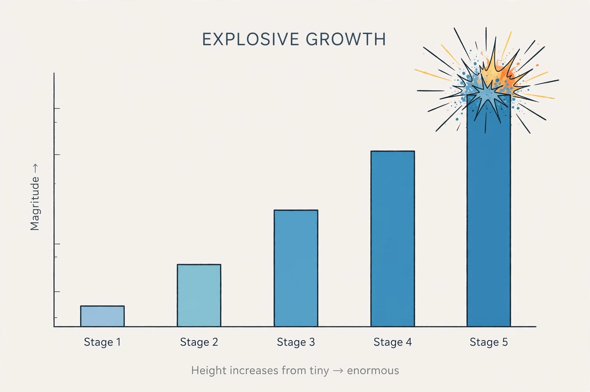

Factorial
From Wikipedia, the free encyclopedia

[Image: A bar chart whose bars explode in height: 1, 2, 6, 24, 120]
In mathematics, the factorial of a non-negative integer n, written n!, is the product of all positive integers up to n: 5! = 5 × 4 × 3 × 2 × 1 = 120. By convention 0! = 1, the empty product.
Factorials count permutations — n! is the number of orderings of n distinct objects — and appear in the binomial coefficients, in the Taylor series for eˣ, and throughout probability. They grow faster than exponentials: 20! already exceeds 2 quintillion.
Extensions
The gamma function extends the factorial to non-integer arguments, satisfying Γ(n+1) = n! and Γ(1/2) = √π — a bridge from discrete counting to continuous analysis.
Stirling's approximation (1730) estimates n! accurately for large n and shows the growth is roughly (n/e)ⁿ√(2πn).
See also
This article is part of Wikipedia, the free encyclopedia. Text is available under the Creative Commons Attribution-ShareAlike Licence.